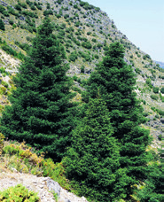

¿En qué características de un pino te fijarías si tuvieses que determinar su especie con una clave dicotómica?
Indica cuáles de las afirmaciones siguientes son incorrectas y por qué lo son.
a. Las semillas maduras ayudan a dispersar los frutos.
b. El ovario de las angiospermas, al madurar, se transforma en fruto.
c. Las gimnospermas se clasifican en monocotiledóneas y dicotiledóneas.
d. Los cotiledones son las primeras hojas del embrión.
Busca información y elabora una infografía que explique qué son las inflorescencias y los tipos que existen. Incluye imágenes e indica el nombre de cada tipo. Cita las fuentes consultadas.
Las siguientes imágenes pertenecen a plantas o partes de plantas angiospermas. Señala si son monocotiledóneas o dicotiledóneas y razón en cada caso tu elección.
¿Es una planta angiosperma o gimnosperma? ¿En qué basas tu afirmación?
Interpreta la imagen siguiente.
Conos de pino en rama de árbol de hoja perenne

Árboles de montañaPlántulas de tomate en macetasCerca de hojas verdesFlor amarillaHojas de mentaTrillium blancoFlor estrella blancaFlor azul